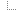
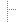

<HTML>
<HEAD>
<TITLE>Docman</TITLE>
<SCRIPT LANGUAGE="JavaScript">
<!--  Hiding Script

// the open folder, by default it's the root
var openFolderId = 1;
var folderTree = 0;

function createFolder(id, name) {
  var folder;
  folder = new Array;
  folder[0] = id;
  folder[1] = name;
  // folder[2] indicates whether the folder is
  // expanded/collapsed
  // folder[2]=1 means expanded, 0 collapsed
  folder[2] = 1;
  return folder;
}

function appendFolder(
  foldersNode, parentId, childFolder) {
  // appends a folder as a subfolder of another
  // folder
  // first, find the parent folder by comparing
  // the parentId with foldersNode[0]
  if (foldersNode[0]==parentId)
    foldersNode[foldersNode.length] = childFolder;
  else if (foldersNode.length>3)
    for (var i=3; i< foldersNode.length; i++)
      appendFolder(
        foldersNode[i], parentId, childFolder);
}

function redrawTree() {
  var doc = top.treeFrame.window.document;
  doc.clear();
  doc.write("<BODY BGCOLOR='#ffffff'>");
  redrawNode(folderTree, doc, 0, 1, "");
  doc.close();
}

function redrawNode(
  foldersNode, doc, level, lastNode, leftSide) {
  if (foldersNode=="0")
    return;
  var j=0;
  var i=0;
  var folderId = foldersNode[0];
  var folderName = foldersNode[1];
  var hasSubNode = (foldersNode.length>3);
  var expanded = foldersNode[2];

  doc.write("<TABLE BORDER=0 CELLSPACING=0" +
    " CELLPADDING=0>");
  doc.write("<TR><TD VALIGN=middle NOWRAP>");
  doc.write(leftSide);
  var nodeLink =
    "<A HREF='javascript:top.clickNode("
      + folderId + ")'>";

  if (level>0)
    if (lastNode) { //the last folder in array
      if (hasSubNode) {
        if (expanded)
          doc.write(nodeLink +
"" + "</A>");
        else
          doc.write(nodeLink +
"" + "</A>");
      }
      else
        doc.write("");

      leftSide += "";
    }
    else { //not last folder
      if (hasSubNode) {
        if (expanded)
          doc.write(nodeLink +
"" + "</A>");
        else
          doc.write(nodeLink +
"" + "</A>");
      }
      else
        doc.write("");
      leftSide += "";
    }

  doc.write("<A HREF='javascript:top.clickFolder("
    + folderId + ")'></A>");
  else
    doc.write("closedfolder.gif WIDTH=24 HEIGHT=22"
      + " BORDER=0></A>");
  doc.write("<TD VALIGN=middle ALIGN=left NOWRAP>");
  doc.write("<FONT SIZE=-1 FACE='Arial, Helvetica'>"
    + folderName +"</FONT>");
  doc.write("</TABLE>")

  if (hasSubNode && expanded) {
    level++;
    for (i=3; i<foldersNode.length;i++)
      if (i==foldersNode.length-1)
	redrawNode(
          foldersNode[i], doc, level, 1, leftSide);
      else
        redrawNode(
          foldersNode[i], doc, level, 0, leftSide);
  }
}


function toggleNode(foldersNode, folderId) {
  if (foldersNode[0]==folderId)
    foldersNode[2] = 1 - foldersNode[2];
  else if (foldersNode[2])
    for (var i=3; i< foldersNode.length; i++)
      toggleNode(foldersNode[i], folderId);
}


function clickNode(folderId) {
  toggleNode(folderTree, folderId);
  redrawTree();
}

function clickFolder(folderId) {
  if (openFolderId != folderId) {
    openFolderId = folderId;
    redrawTree();
    objectFrame.location="DisplayObjects.jsp?id=" +
      folderId;
  }
}

function deleteSubfolder(foldersNode, parentId) {
//delete all subfolders in parent folder
  if (foldersNode[0]==parentId) {
    for (var i=foldersNode.length-1; i>=3; i--) {
      foldersNode[i] = "0";
    }
  }
  else if (foldersNode.length>3)
    for (var i=foldersNode.length-1; i>=3; i--)
      deleteSubfolder(foldersNode[i], parentId);
}

function initialize() {
  folderTree = createFolder(1, "root");
}

// end hiding script  -->
</SCRIPT>
</HEAD>

<FRAMESET onLoad="initialize()" FRAMEBORDER="0"
  FRAMESPACING="0" BORDER="0" cols="225,*">
  <FRAME SRC="Tree.html" NAME="treeFrame">
  <FRAME SRC="Login.html" NAME="objectFrame">
  <NOFRAMES>
  <BODY>
    Please upgrade your browser to
    one that understands frames.
  </BODY>
  </NOFRAMES>
</FRAMESET>
</HTML>
